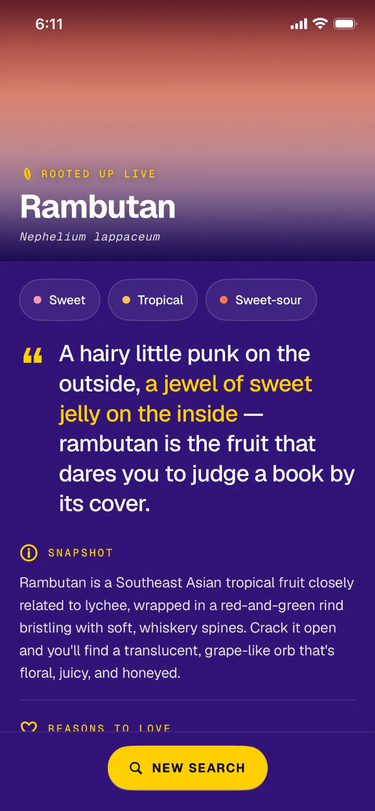
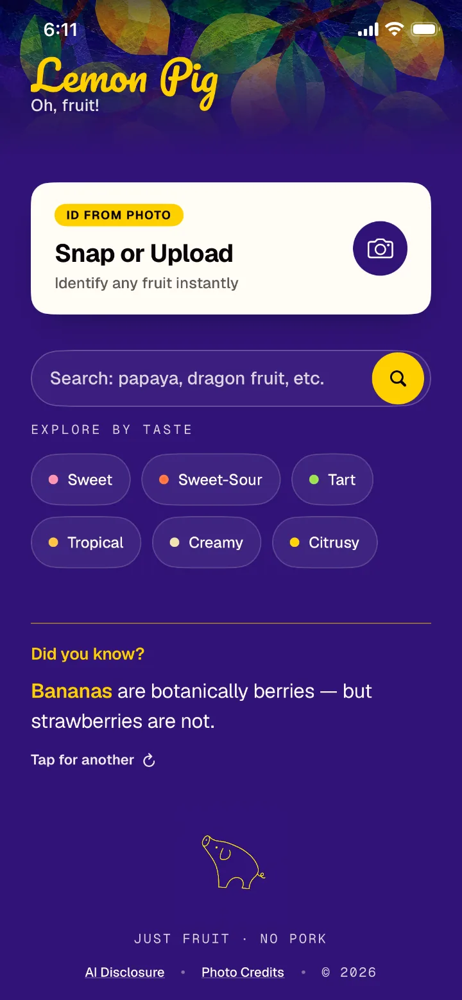
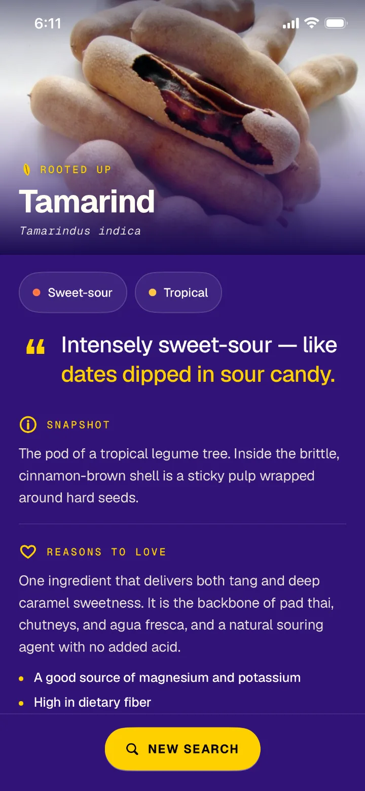

Product design · iOS
Lemon Pig

Outcome
Shipped solo to the App Store, July 2026. Any fruit, in the prepopulated catalog or not, gets an answer. Live-generated profiles are honestly marked and remembered once found, and every off-catalog search is counted so real use shapes the next version.
Problem
A fruit identifier is used at the moment of need, at a market or grocery store, so a “No match” screen is a dead end at the worst time. A prepopulated catalog can’t be complete because there are thousands of different fruits. The app live-generates an answer as the fallback, but a generated profile has no curated photo and hasn’t been reviewed the way catalog entries have. The design has to present both pathways without pretending they’re the same.
My role
I defined the product, made the design decisions, selected the colors and fonts, tested with real fruit and photos, identified bugs (including an AI-introduced camera-view bug), and shipped. The mascot, inspired by Picasso, and the hero image were made with ChatGPT. Claude Design and Claude Code handled the build, including accessibility checks. The calls were mine. Lemon Pig is also where I learned to build with AI, and Wut Mutt inherited its conventions.
Constraints
Five scenarios determined how the app responds.
| Scenario | Response | Rule |
|---|---|---|
| Searched fruit is in the catalog | Full profile with curated photography | Curate what you can |
| Name or photo is off-catalog | Identified live; labeled “Rooted Up Live”; hero drawn in the fruit’s colors | Answer honestly rather than not at all |
| A live-identified fruit is searched again | Same profile, served from on-device cache | Don’t contradict yourself |
| Any off-catalog search | The fruit name is counted anonymously (never photos or IPs) and declared on the privacy label | Let real use grow the catalog |
| Any result touching safety | Note: “Don’t rely on it alone to judge whether a fruit is safe to eat” | Food is involved, so over-disclose |
Although the model tested accurately throughout, the safety disclaimer exists because being right in testing isn’t the same as being safe to trust in every real-life instance.
Guiding principle
Search never dead-ends.
On the first real-phone TestFlight build I typed in “rambutan.” To my disappointment, this delightful fruit hit No Match. So I made the call that any fruit not included in the prepopulated catalog be identified live.
The flow below shows what happens on a miss.
Live searches show what the catalog is missing, so I had them counted anonymously to shape future releases.
Testing also showed that live-generated profiles could differ for the same fruit, so I added a cache that returns the same profile every time.
So now my rambutan is consistently “A hairy little punk on the outside…”
A smaller decision from the same testing: plain language over specialist terms. A peach is a stone fruit, not a drupe. Accessible copy is part of earning user trust.
The home screen had a void, and Claude proposed filling it with a recent-searches list. But nobody looks up a mango twice, so the list would have been noise. I chose a fun fact that cycles on every return instead. The user gets something new each time the app opens, at no cost to the primary task.


Learning
I would test on a real phone earlier rather than rely on the simulator because the biggest scope decisions came from one TestFlight session. The simulator has no camera, so photo identification can’t fully be tested there.